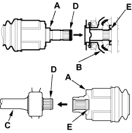
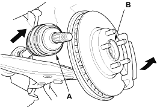
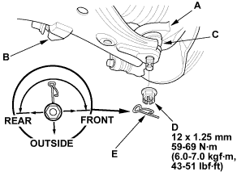
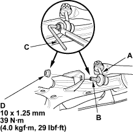

- Clean the areas where the driveshaft contacts the differential thoroughly with solvent or carburettor cleaner and dry with compressed air. Insert the inboard end (A) of the driveshaft into the differential (B) or intermediate shaft (C) until the set ring (D) locks in the groove (E).

- Install the outboard joint (A) into the front hub (B).


- Install the knuckle (A) onto the lower arm (B). Be careful not to damage the ball joint boot (C). Wipe off the grease before tightening the nut at the ball joint. Torque the castle nut (D) to the lower torque specification, then tighten it only far enough to align the slot with the pin hole. Do not align the nut by loosening.

- Install the new lock pin (E) into the pin hole from the inside of the vehicle.
- Connect the front stabiliser link (A) to the lower arm. Hold the stabiliser link ball joint pin (B) with a hex wrench (C) and tighten the new flange nut (D).
